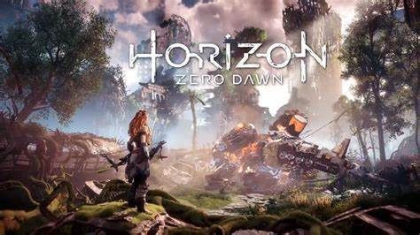

Mundo Gammer
Los 3 videojuegos más esperados para el próximo 2022
El mundo de los videojuegos ya vislumbra un 2022 lleno de nuevos títulos. Como es usual,
ya conocemos gran parte de los títulos más esperados por parte de la comunidad,
los cuales esperarán ganarse el corazón de los jugadores de Xbox, PlayStation, Nintendo y PC.
Aquí te dejamos un listado con 3 de los más esperados para el próximo año.
1. Elden Ring
Elden Ring es un videojuego desarrollado por FromSoftware y publicado por Bandai Namco Entertainment que busca volverse
un auténtico título de referencia. Y no es para menos, pues nos espera un increíble mundo
abierto con unos gráficos brutales dentro de lo que es, quizás, el juego más esperado para el año que viene.
Se estrena el 21 de enero de 2022.

2. God of War: Ragnarok
Una de las exclusivas por excelencia de PlayStation está lista para su nueva entrega.
Y no es para menos, pues GOW se ha convertido en una de las franquicias más queridas de los entenados de Sony.
God of War: Ragnarok es un título desarrollado por Santa Monica Studio y publicado por
Interactive Entertainment exclusivamente para consolas PS en algún momento de 2022.
3. Horizon Forbidden West
Tras el éxito rotundo de Horizon Zero Dawn, llegará Horizon Forbidden West, otra exclusiva
de PlayStation desarrollada por Guerrilla
Games que busca enamorar a los jugadores de PS4 y PS5 a partir del próximo 18 de febrero de 2022.
